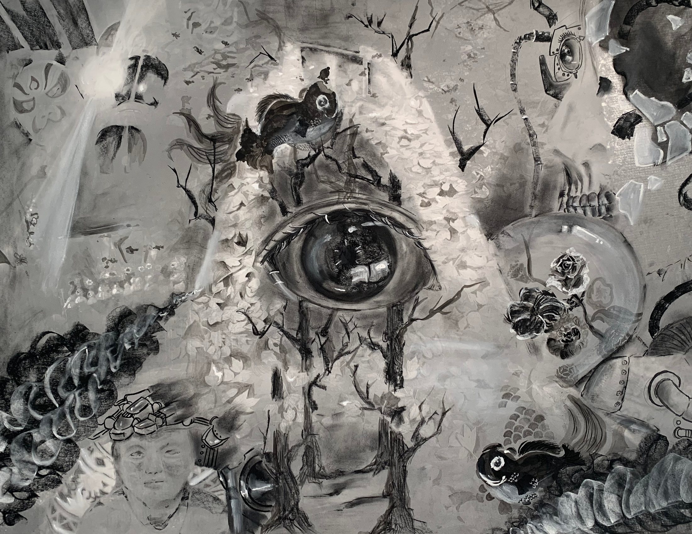
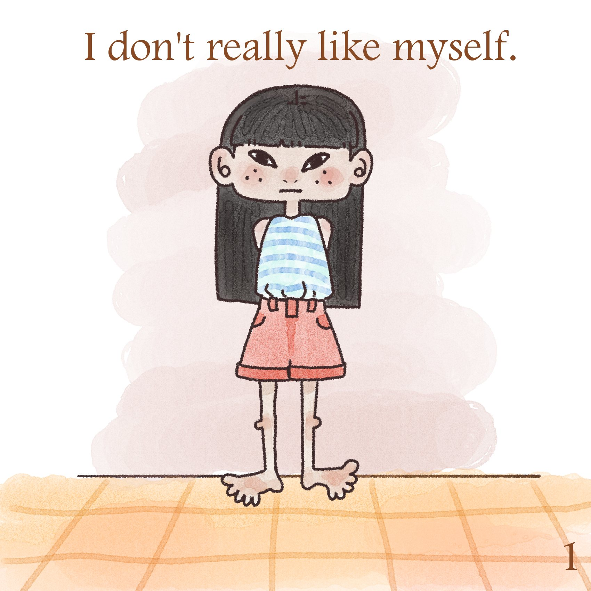
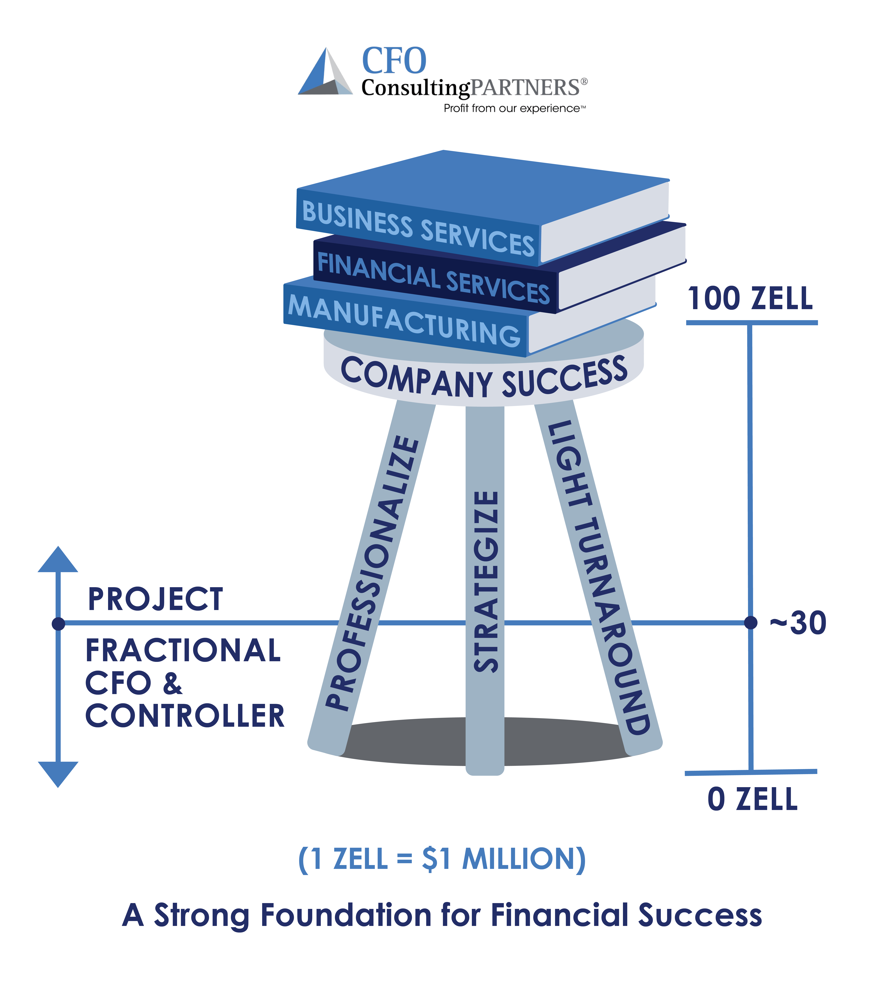
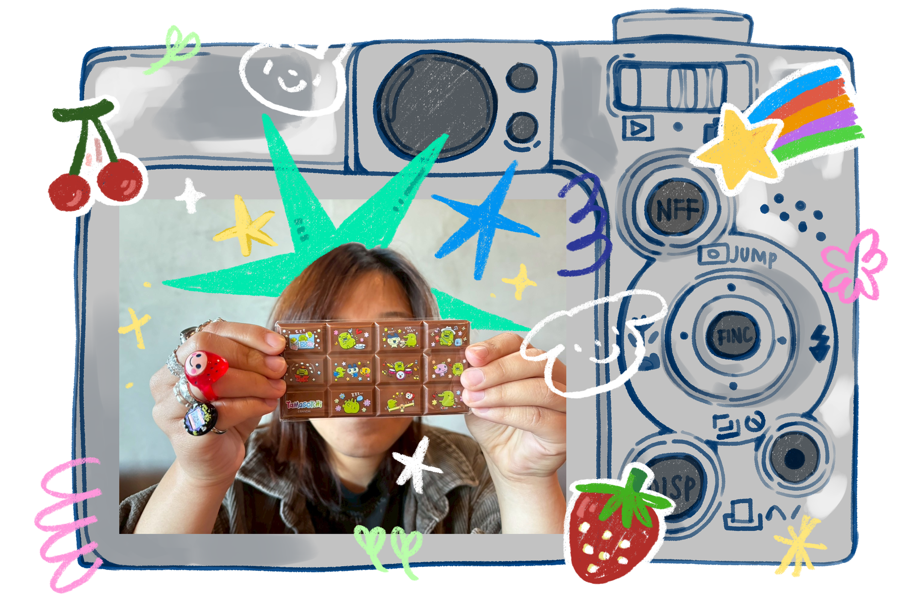
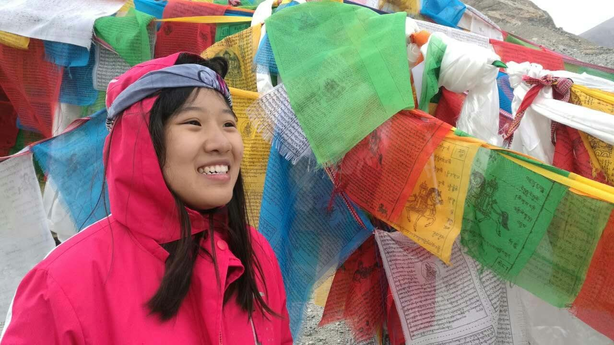
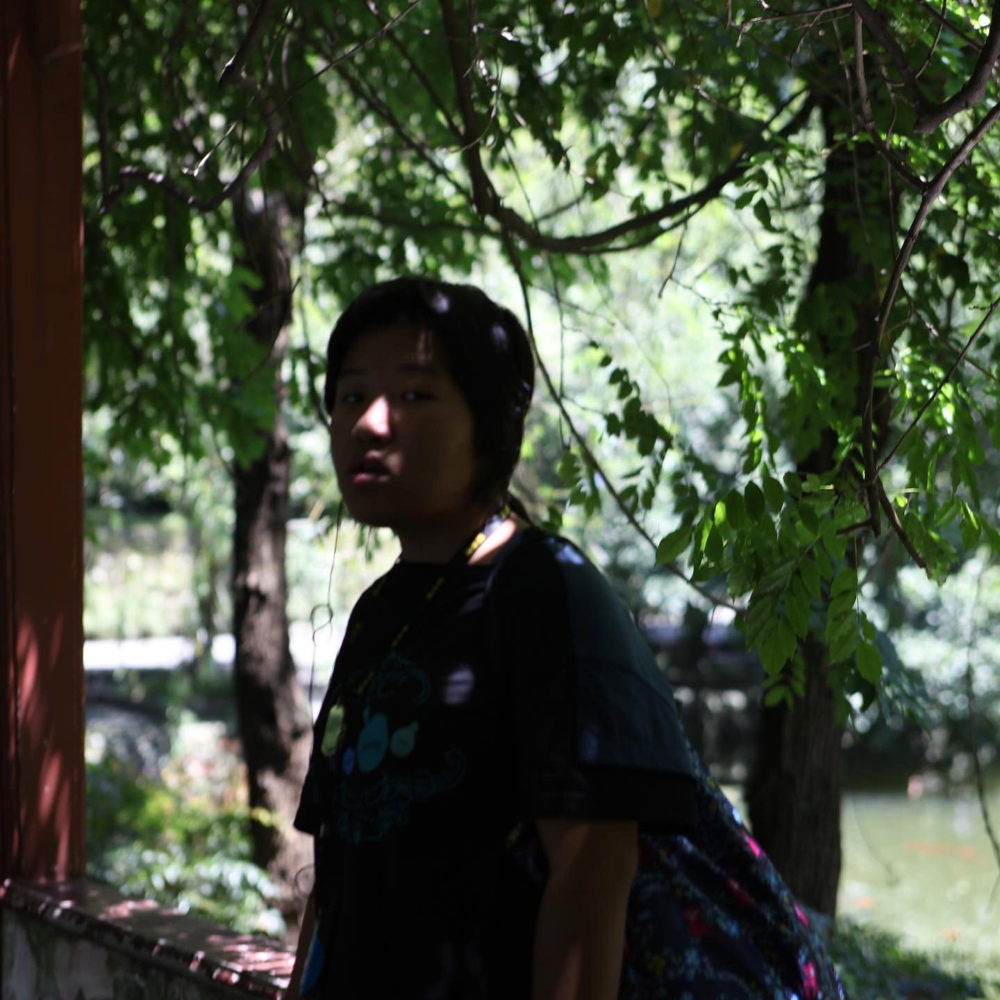
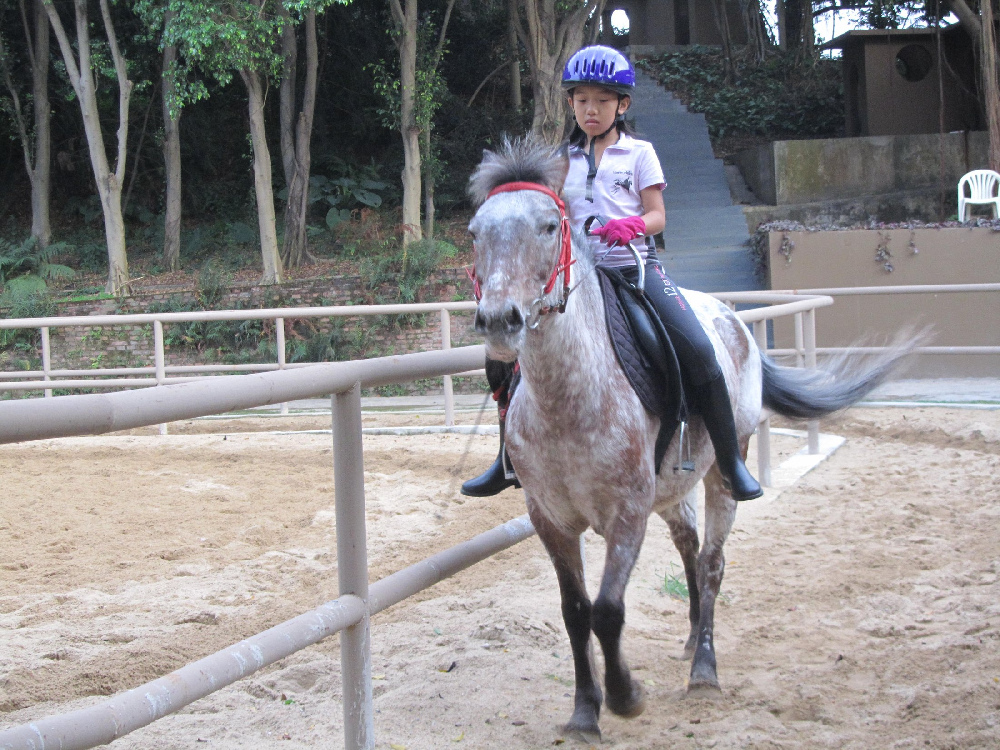
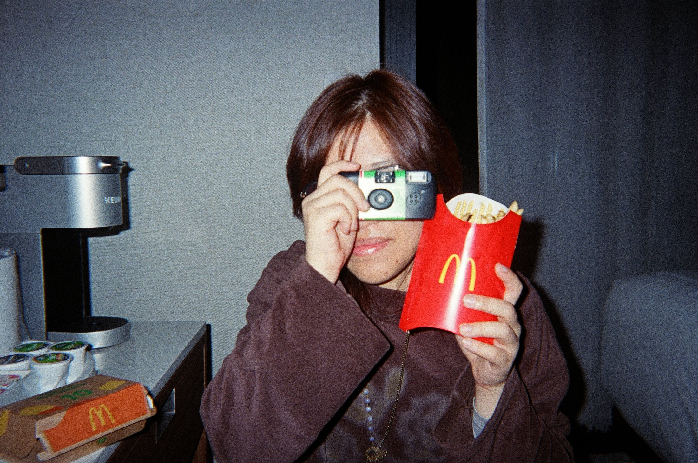

Make ideas readable
I research, organize, and turn scattered information into clear content, campaigns, and visual systems.
Cross-cultural marketing strategist + creative
I connect audience insight, culture, design, and storytelling to build thoughtful campaigns and visual experiences.
See selected work ↓01 / Selected work




02 / Ongoing Creative Practice
Some projects are less about one final deliverable and more about how I keep learning to see, move, frame, and tell stories.
03 / Tiny Graphics Drawer
Open a piece from the pile.
Event flyers, logo sketches, and small visual experiments.04 / How I can help
I research, organize, and turn scattered information into clear content, campaigns, and visual systems.
I create social campaigns, events, and digital content that help people feel invited and connected.
I support email campaigns, CRM organization, HubSpot updates, and tracking so marketing leads somewhere useful.
I use language, context, and care to communicate across English, Mandarin, Cantonese, and Japanese-speaking audiences.
I support timelines, archives, websites, logistics, and documentation so teams can move more smoothly.
I bring design, illustration, layout, and storytelling into brand and marketing work.
05 / Experience
Built the WordPress site from the ground up and supported campaigns that increased engagement and community visibility by 15% in one month.
Visit site ↗Supported social content, Constant Contact, HubSpot, client tracking, onboarding, and workflow documentation.
Visit site ↗Supported classroom activities, mentorship, and a positive reading experience for elementary students.
View story →Created page systems that balanced student stories, image rhythm, and the practical details of production.
View archive →Double major in Politics & International Affairs · Minor in Studio Art · May 2026
06 / About

A cross-cultural marketer and creative who loves bringing people, stories, and visuals together.
My work sits between research, design, language, and community - whether I'm building a campaign, shaping a brand message, or creating content that helps people feel connected.
Outside of work, you'll probably find me making art, studying Japanese, riding horses, or searching for a good coffee shop. I'm also a passionate barista, so I believe small details can change the whole experience.

At 13, I reached the closest tourist camp to Mount Everest before it later closed. Instead of taking the bus, I walked there myself at high altitude. Maybe stubborn, maybe brave - probably both.

I inherited my first Canon camera from my dad and started shooting Threads of Yunnan: Life in Motion. That was when I fell in love with street photography and started noticing the sparkle in mundane, everyday life.

When I was 9, I rode across the mountains in Xinjiang from morning until evening. After that trip, I started learning riding more seriously. My love for horses probably began even earlier with Spirit: Stallion of the Cimarron by DreamWorks.

A recent little life snapshot - proof that outside strategy decks and design files, I am still collecting small moments, outfits, coffee, and memories.
07 / Contact

From the drawer